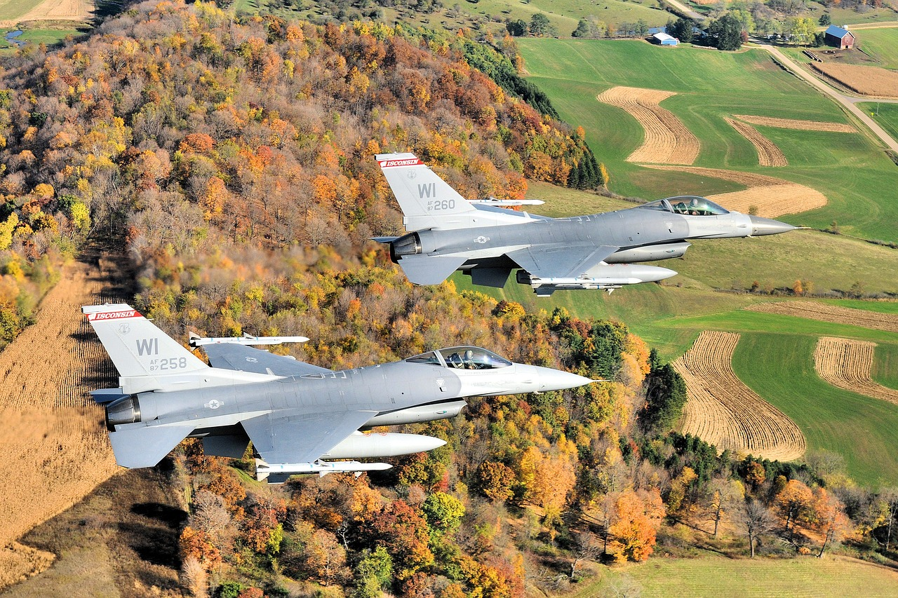

The F-16 Fighting Falcon is one of the most recognizable and versatile fighters in military aviation history...
As a result of a competition that included prototypes from various companies...
From the very beginning, the aircraft was designed as a day fighter...
The F-16 turned out to be a huge export success...
Despite the passage of more than four decades...
The history of the F-16 is a history of engineering vision...